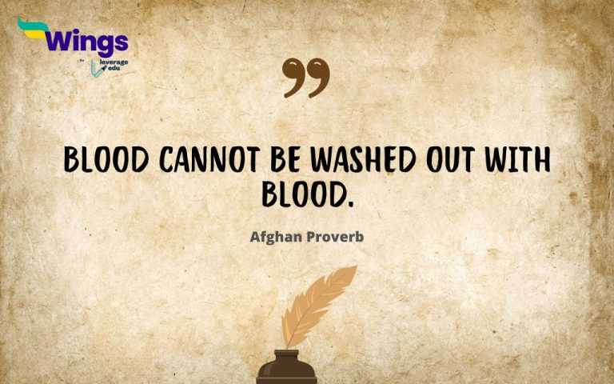

This Afghan proverb has several interpretations. One of the most common interpretations is that resorting to violence to solve a violent act only creates a cycle of bloodshed. Each act of violence doesn't erase the previous one, it just adds to the problem.
This proverb, often attributed to an Arabian source, emphasizes the importance of health and hope in a fulfilling life. It emphasizes that good health provides the foundation for a hopeful outlook towards life.
It implies that even the most beautiful things can't escape reality. No matter how attractive or perfect something seems, it has to deal with the practicalities of life and its limitations. It's a reminder to stay grounded and humble despite having desirable qualities.
This proverb means that even the most powerful or difficult things can be guided or controlled with patience, finesse, and understanding.